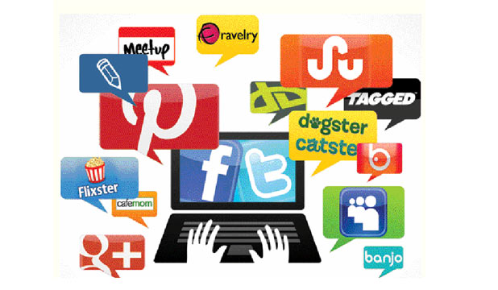

Broadcast Media credibility in Trying Times!
It has been seen by the majority that the credibility of media gradually fades due to existence of fake news. However, it is not just deceiving fake news that contributes to the seemingly incredibility of media but Advertisers influence also that has the ability to control media content and finance broadcasts media.

This results to the unjust control of media contents springing to biases as standards of advertisers will only be considered for media content programs. Additionally, advertisers’ public relations nowadays are also invalidating the believability of media because instead of airing interesting and notable news publicity materials are more entertained and contemplated this results to more relevant news expulsion from unimportant publicity materials airing, for example covid-19 news was barely featured in news during the starting months of 2020 until it shocked the public for the reports of public health care about the increasing cases of infection and mortality..
Therefore, pressure on professional journalists to cover and unfold more informative news and stories arise . Lastly, advertisers television content are seen to be impacted by many factors and concepts. Ethical issues are being seen in the advertisements presented in television as it triggers either materialism, commercialism and colonial mentality. Actions must be done here ethical principles of media must always be met to avoid misleading people from what’s moral and immoral.
Media’s credibility level
https://core.ac.uk/download/pdf/42992822.pdf
MASS MEDIA IN FIBERS... COMMUNITY MEDIA
Now that Covid-19 has been considered endemic by the World Health Organization utmost humanity safeguarding must be practiced and people must be all well informed about how the outbreak of covid-19 be came endemic and can be easily acquired, avoided and addressed.
Since Mass Media plays the role of releasing news, public announcements and mass email, it caters the needs of the majority. Nonetheless, the decentralization of Mass Media and the establishments of community media highlights the availability of media anytime and anywhere.
Community Media is inclusive as it allows people from remote areas, indigenous and trival groups to incorporate themselves in community issues and programs for development. Data, program contents and stories are all free from profitable manipulation.
Higher level of participation among the members of the community are only one of the many goods in community media. Information delivery news releases are easier and ideological sharing are more likely to be entertained. At this time, communication students believe that community media are expected to be mobilized properly because the repression of pandemic depends upon the effectiveness of plan of action, of local government units.
So community media won’t censor anything about covid-19 and has proximity as a result it targets the whole locality. Local government needs to fund the devices, programs and employers of community media and the deployment of ICT . In that case, community media will be given particular importance.
MEDIA COVERING THE UNCOVERED NEWS
https://earthjournalism.net/stories/reporting-the-unknown-how-reporters-in-the-philippines-cover-covid-19